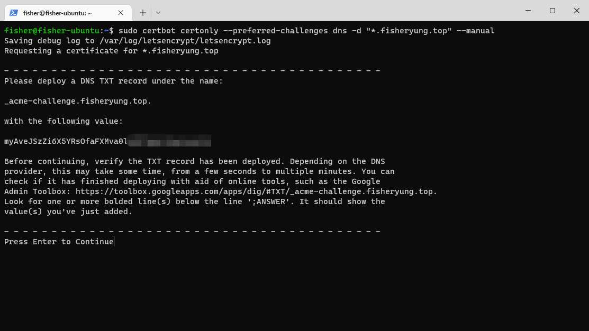
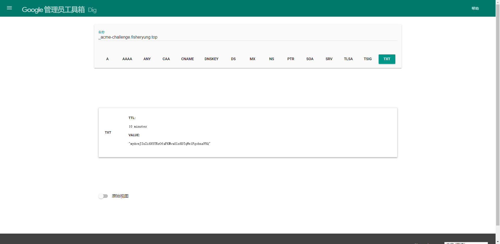
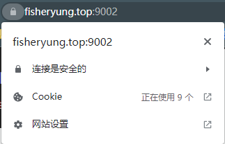
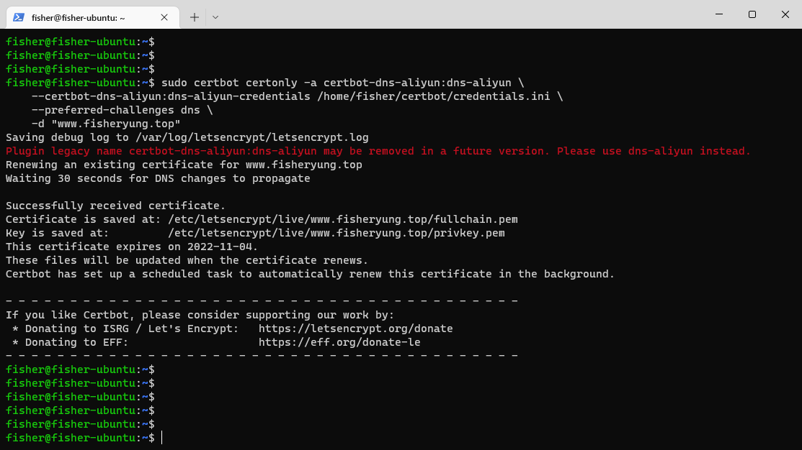

前言
由于现在没有云服务器的学生优惠，我申请了家里宽带的公网IP，买了个域名并且配置了DDNS（已记录在博客中，链接），在家里用一台旧笔记本架了一台服务器，实测平均功耗30w，一个月下来也用不了多少电费，配置还比阿里云高很多，是个性价比很高的选择。接下来要做的是用certbot为域名申请SSL证书，并配置证书自动更新。
安装Certbot
Ubuntu下安装certbot很简单，使用snap安装即可：1
2sudo snap install --classic certbot
sudo ln -s /snap/bin/certbot /usr/bin/certbot
申请SSL证书
接下来进入主题，开始SSL证书的申请。
运行Certbot命令
首先是运行certbot的证书申请命令，需要注意的点是验证模式要用DNS-TXT的方式，-d后面跟要申请的域名，我这里申请的是泛域名。
命令如下：1
sudo certbot certonly --preferred-challenges dns -d "*.fisheryung.top" --manual

这时certbot会提醒你在域名DNS解析记录中添加记录，登录阿里云DNS解析，点击添加记录，记录类型选择TXT，将域名和值填进去。添加记录条目后，点击终端中提供的Dig网址，如果解析结果和certbot提供的值相同，则表示添加记录成功。
返回到终端，回车继续验证，没问题的话，certbot会提示这个证书不会自动更新（因为是手动申请的）。此时证书已经申请成功了，存放在/etc/letsencrypt/live/fisheryung.top中。

配置Nginx
找到Nginx中https server的配置代码块，添加如下字段：1
2
3
4
5
6
7
8
9# SSL
ssl_certificate /etc/letsencrypt/live/fisheryung.top/fullchain.pem;
ssl_certificate_key /etc/letsencrypt/live/fisheryung.top/privkey.pem;
# SSL config
ssl_session_timeout 5m;
ssl_ciphers ECDHE-RSA-AES128-GCM-SHA256:ECDHE:ECDH:AES:HIGH:!NULL:!aNULL:!MD5:!ADH:!RC4;
ssl_protocols TLSv1 TLSv1.1 TLSv1.2;
ssl_prefer_server_ciphers on;
重新加载Nginx配置：1
sudo service nginx reload
刷新一下博客，就能看到已经是安全的HTTPS连接了。

配置证书自动续期
证书每隔3个月就需要续期一次，每次都要手动续期的话略显麻烦，因此配置一下自动续期是很有必要的。阿里云的自动更新插件在GitHub中可以找到，链接在此。
安装插件
跟着插件中的README操作即可，最后一条命令可以列出certbot已经安装的插件：1
2
3
4sudo snap install certbot-dns-aliyun
sudo snap set certbot trust-plugin-with-root=ok
sudo snap connect certbot:plugin certbot-dns-aliyun
sudo certbot plugins
配置插件
前往阿里云的RAM访问控制，点击这里，创建一个操作账号，步骤如下：
- 点击
身份管理->用户，点击创建用户按钮 - 为账号设定
登录名称和显示名称，勾选Open API调用访问，确定创建账号 - 记录下此时页面显示的
AccessKey ID和AccessKey Secret，这是该账号的登录ID和密码 - 点击
返回，点击进入账号详情，点击权限管理 - 点击
新增权限，在系统策略中选择AliyunDNSFullAccess后点击确认
此时操作账号已经创建完毕。接下来回到服务器中进行配置。
在服务器中新建一个credentials.ini文件，将AccessKey ID和AccessKey Secret填入到文件中，如下所示：1
2certbot_dns_aliyun:dns_aliyun_access_key = 12345678
certbot_dns_aliyun:dns_aliyun_access_key_secret = 1234567890abcdef1234567890abcdef
保存文件并将其权限改为600，同时记住该文件存放的位置：1
chmod 600 /path/to/credentials.ini
为证书续期
接下来运行certbot的证书申请命令，与上面不同的是，这次我们取消手动--manual选项，改用插件自动完成。
以下命令以我的www域名为例子进行证书续期，注意插件配置文件的路径需要修改：1
2
3
4sudo certbot certonly -a certbot-dns-aliyun:dns-aliyun \
--certbot-dns-aliyun:dns-aliyun-credentials /path/to/credentials.ini \
--preferred-challenges dns \
-d "www.fisheryung.top"
成功续期的截图如下：

注意：通过这种方式续期的证书都将会自动续期，certbot会自动建立一个定时任务。
参考文档
整个操作过程的参考文档和用到的工具链接如下：